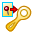

Detach a shape from the study
After you use the Generative Design workflow to solve a generative study, you can use the resulting body in other operations independently of Generative Design.
Use the Detach from Study command to detach the generated shape from the study, so that you can make changes to the model that will not be affected by any future edits of the study. Similarly, the changes you make to the part have no impact on the study.
-
In the Generative Design pane, expand the Results node.
-
Right-click the Generative Study Result entry and select Detach from Study

. -
Once the shape is detached, it is added to the bottom of PathFinder. Right-click this entry and rename it to something recognizable.
-
To print the detached mesh body, see Print an optimized solid mesh body.
You must have a paid license type to be able to use the detached shape elsewhere in Solid Edge.